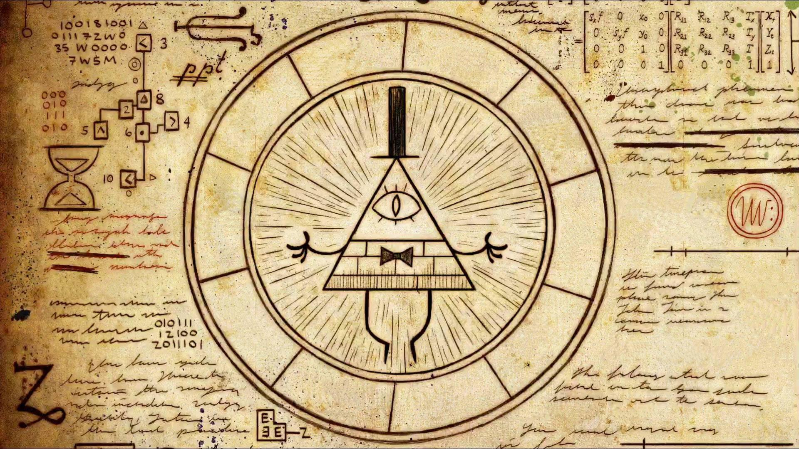

.png)
osu! is a freeware rhythm game developed by Dean "peppy" Herbert, originally for Microsoft Windows. The game has also been ported to macOS, iOS, Android, ...

Gameplay
osu! has multiple gamemodes (Standard, Mania, Taiko, and CtB), but from here on osu! will refer to osu! Standard.

Each note has an approach circle. When the approach circle reaches the outer edge of the note, you press the mouse button. Timing is key.
There are also sliders and spinners. For sliders you drag your cursor along the slider track and for spinners you spin your mouse in a circle.
Beatmaps (songs) are classified by difficulty, from easiest to hardest: Easy, Normal, Hard, Insane, Expert, and Expert Plus.
Music
osu! features a wide variety of music: pop, soundtrack, anime, electronic, rock, k-pop, etc. This is because the community makes the maps, instead of the developers.
Music is what makes osu! "cross cultural."
Community
There are community forums where all sorts of people have all sorts of discussions.
While Dean Herbert is the original creator, osu! is partially being developed by volunteer community members.
There are both official and community hosted tournaments. Tournaments are often broadcasted on Twitch.